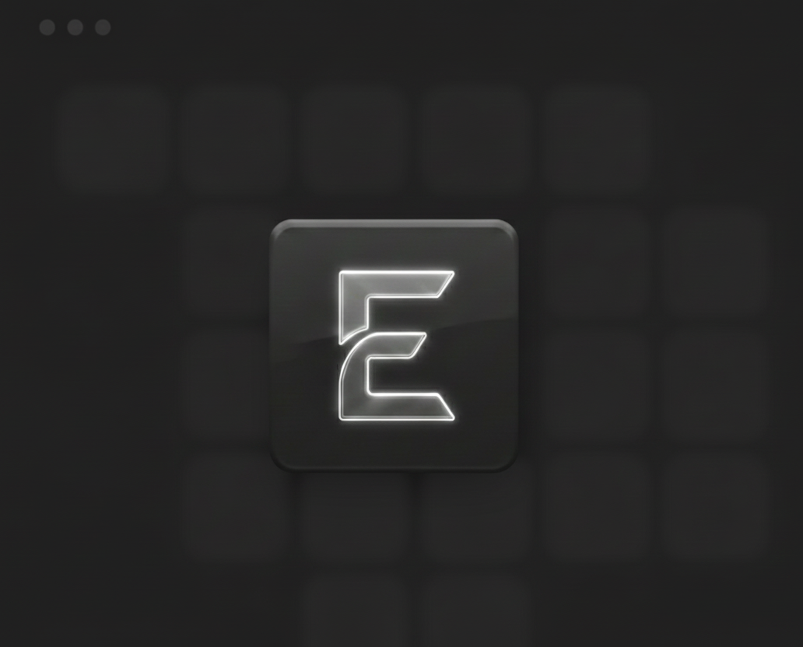

EnzoSakollari
Building scalable backend systems
I’m Enzo, a backend-focused engineer from Tirana, Albania. I build scalable backend systems with Python, Django, and Java, with a focus on clean architecture, security, and performance.
Hello, there 👋
Hi, I’m Enzo – Backend Engineer
I’m a backend engineer based in Tirana, Albania. I build scalable, reliable backend systems with Python, Django, and Java. My focus is on clean architecture, secure authentication, and performance- oriented backend logic that’s easy to maintain and extend.
Tech Stack
Python & Django • Java • SQL • REST APIs • Docker • OOP architecture. I work on backend services that are structured, secure, and designed to scale — from database schemas to API design and deployment-ready builds.

Available Worldwide
I live in Tirana, Albania and I’m open to remote work with teams across different time zones. I value clear communication, stable systems, and shipping features that actually solve problems in production.
Why Backend?
I love creating systems that are reliable, maintainable, and engineered with long-term growth in mind. From database design to authentication, APIs, and deployment, I care about how all pieces of a system work together — not just that they work once.

My Projects 👨💻
Django Social Media Backend
A full backend for a social media platform built with Django. Features include authentication & login/registration, posts and profiles, secure views with permissions and middleware, Django ORM models for structured data, and REST endpoints ready for integration. This project reflects my strength in backend logic, CRUD flows, and structuring scalable Django applications.
Modern Portfolio Website
A fully responsive portfolio website that showcases my backend work, projects, and skills. It’s built with a clean layout, animations, and reusable UI sections. The focus is on performance, clarity, and presenting backend-heavy experience in a polished and modern front-end experience.
Java Game Systems
A set of Java game projects, including an RPG system and a 2D GUI game. They feature character stats, combat turns, inventory logic, collision detection, level structure, and state-driven gameplay. These projects showcase my understanding of OOP, inheritance, interfaces, event-driven programming, and clean, modular architecture in Java.
My Skills 💪
.png)
Backend Engineer
I design backend systems around clean architecture, secure authentication, and reliable data flows. From Django applications to Java services, I focus on database schemas, API structure, and performance so that systems remain stable as they grow.
Code & Systems
I write clear, readable code across Python, Java, and SQL. My focus areas include API design, security, deployment-ready backends (Docker), and long-term maintainability. I’m also building foundations in data engineering (Spark, Kafka) to handle larger scale systems.